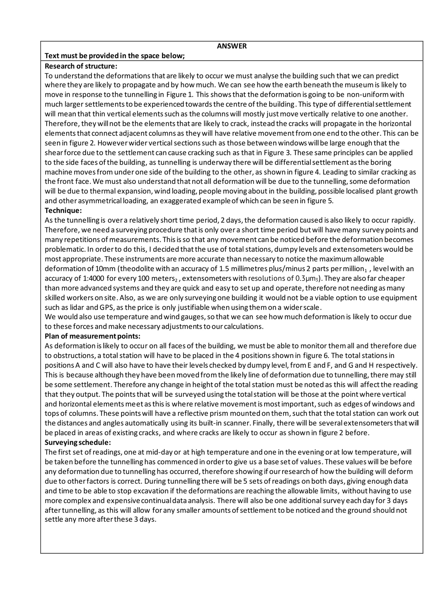

My role
Individual coursework submission covering monitoring strategy, survey control, and movement assessment for a tunnelling scenario.
Academic - AR10368
Surveying coursework for monitoring a museum during adjacent tunnelling
University of Bath surveying coursework focused on deformation monitoring for the Holburne Museum during proposed tunnelling works.
Individual coursework submission covering monitoring strategy, survey control, and movement assessment for a tunnelling scenario.
Preview pages
Selected pages from the document set to give a quick view of the calculation or report format. Click any image to open a full-screen view.


Project documents
The files below form the project document set. They can be opened directly or viewed in-browser using the embedded PDF frame.
Coursework report covering deformation monitoring for a tunnelling scenario.
In-browser viewing
Use the tabs below to switch documents. The active PDF can always be opened in a new tab with the button beside the viewer.
{kind=link}